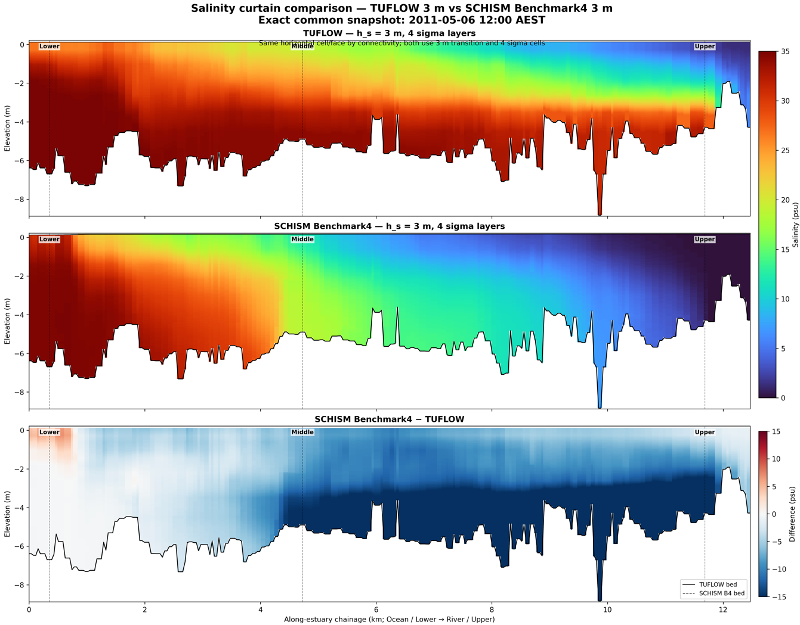
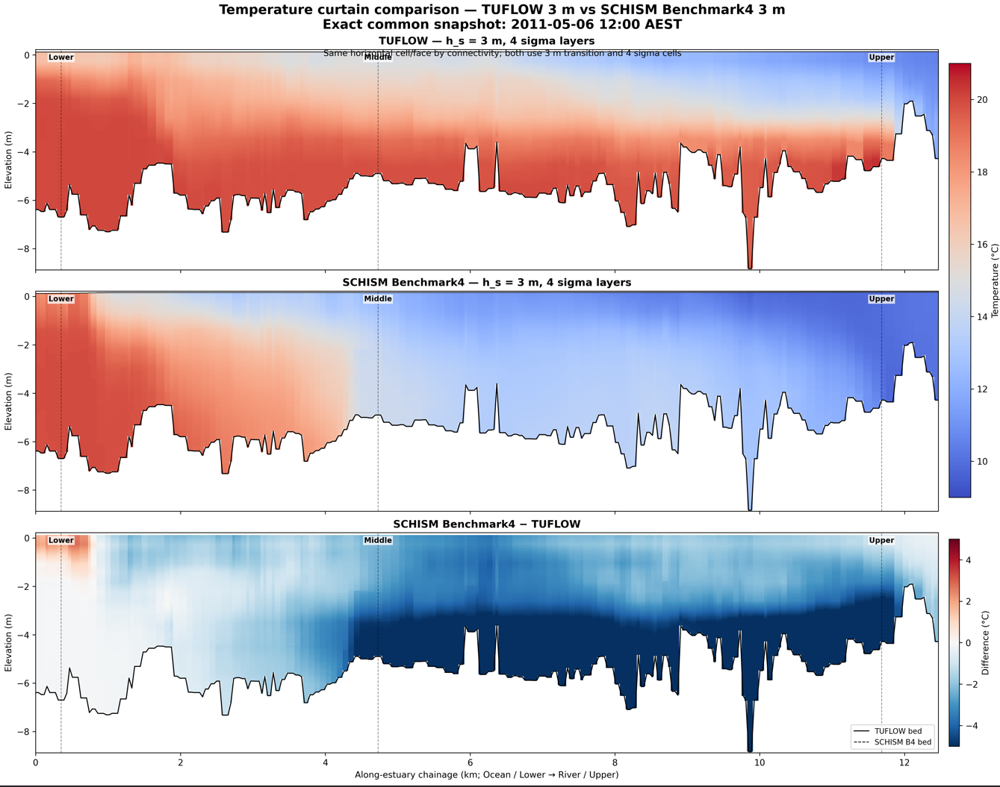
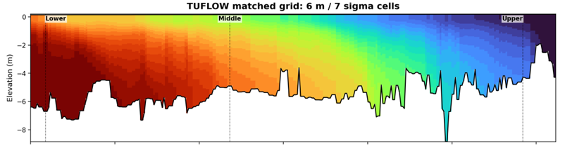
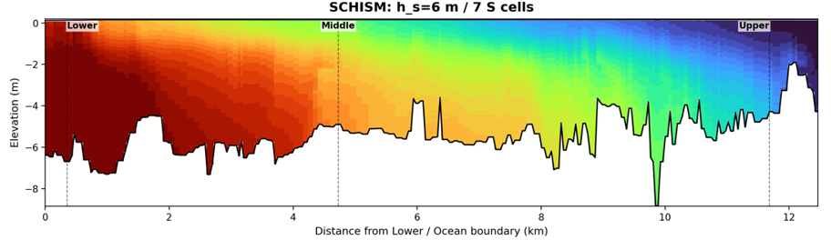
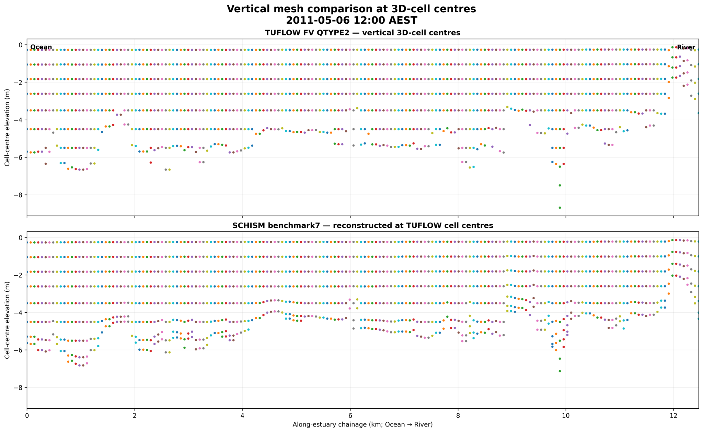
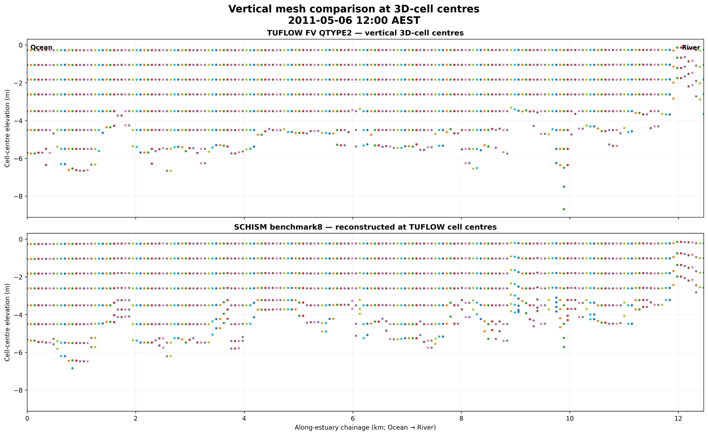
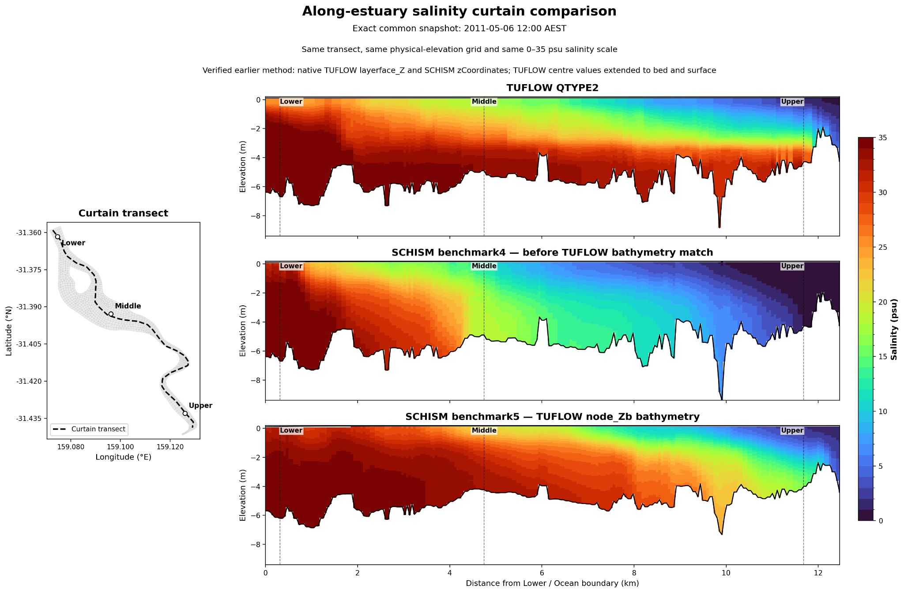
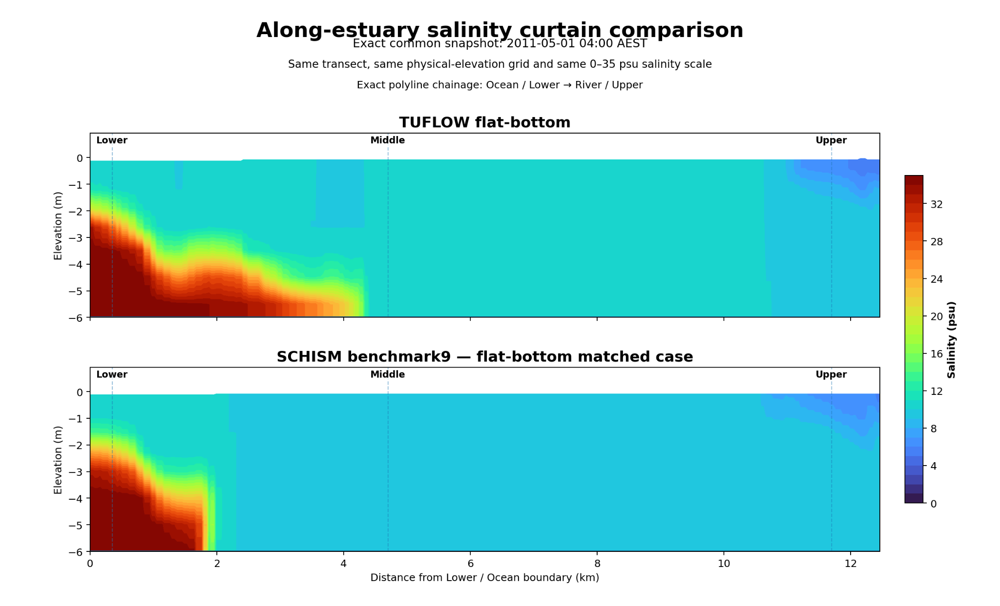
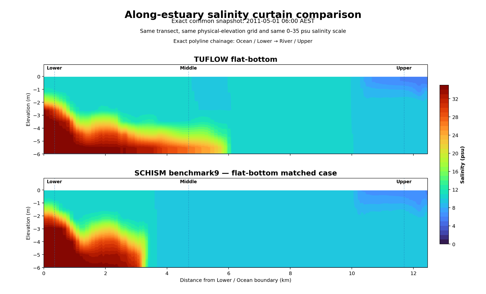
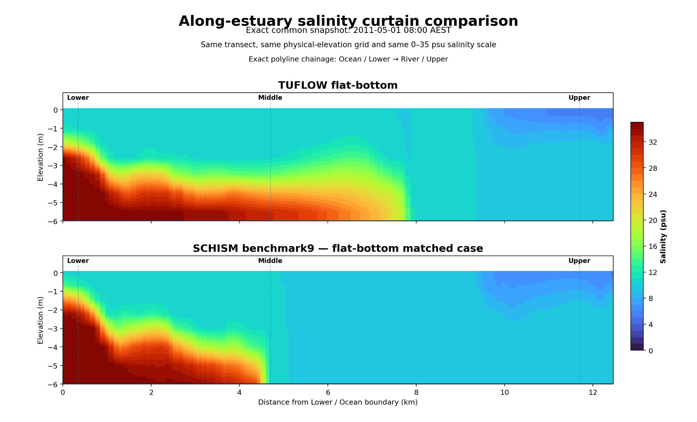

1. Model setting comparison
The comparison has progressively aligned the main user-controlled geometry, forcing and friction settings. Some native model representations and numerical algorithms remain inherently different and are therefore not described as exact matches.
| Category | Setting | TUFLOW | SCHISM | Status |
|---|---|---|---|---|
| Geometry | Horizontal mesh | TUFLOW FV mesh | Converted from the same mesh | Matched |
| Geometry | Bathymetry representation | Cell-centred | Node-based | Adjusted / model-specific |
| Vertical grid | Transition depth | 3 m and 6 m configurations tested | hs = 3 m and 6 m configurations tested | Paired tests |
| Vertical grid | Sigma structure | Paired layer configurations | Corresponding paired configurations | Paired tests |
| Bottom friction | Manning n | 0.0025 | 0.0025 | Matched |
| River boundary | Discharge | 20 m³/s | 20 m³/s | Matched forcing |
| River boundary | Salinity / temperature | 0 psu / 10 °C | 0 psu / 10 °C | Matched |
| Ocean boundary | Water level | Prescribed water level | Same water-level forcing | Matched forcing |
| Ocean boundary | Salinity / temperature | 35 psu / 20 °C | 35 psu / 20 °C | Matched |
| Atmospheric forcing | Meteorological forcing | CFSR | Same CFSR forcing | Matched forcing |
| Native representation | Vertical storage / solver formulation | Cell-centred FV formulation | Node-based SCHISM formulation | Intrinsic difference |
2. 3 m vs 3 m comparison
Both models were compared using a nominal 3 m transition depth with four sigma cells. Although the nominal vertical configuration was aligned, clear differences remained in the simulated salinity and temperature structure.


3. 6 m vs 6 m comparison
A second paired test moved the TUFLOW vertical transition to 6 m and compared it with the SCHISM hs = 6 m configuration. This provides a controlled reference for assessing sensitivity to the transition depth and upper-layer structure.


4. Vertical Mesh Investigation
Inspection of the vertical mesh showed that matching the nominal transition depth and number of sigma layers did not necessarily result in the same physical vertical representation in TUFLOW and SCHISM. Differences remained in the locations of the vertical cell centres, particularly near the bed.
The SCHISM mesh was therefore adjusted to better represent the TUFLOW vertical structure. Following the mesh adjustment, the salt wedge penetrated substantially further upstream and the overall salinity distribution became closer to the TUFLOW result. This demonstrates the strong sensitivity of the simulated estuarine salinity structure to vertical-mesh and bathymetry representation.



5. Flat-bed comparison
A flat-bed case was used as an additional controlled comparison to reduce geometric complexity and examine how the two models evolve under a simpler bathymetric configuration.


